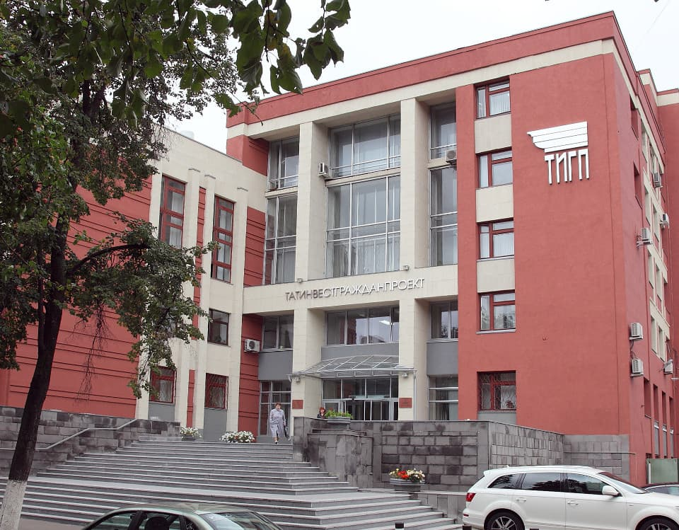

{% set title = "Главная страница" %} {% extends "layout.html" %} {% block content %}

<div id="fullpage">
    <div class="section fp-auto-height-responsive">
        <div class="about-company">
            <div class="header">
                
                <div class="header__main-nav-wrapper js-burger-wrapper">
                    <nav class="main-nav">
                        <a href="#" class="header__main-nav-close js-burger-close">
                            <svg width="35" height="35" aria-hidden="true" class="icon-cross">
                                <use xlink:href="#cross" />
                            </svg>
                        </a>
                        <ul class="main-nav__list">
                            <li class="main-nav__list-item active">
                                <a href="index.html" class="main-nav__link">Главная</a>
                            </li>
                            <li class="main-nav__list-item">
                                <a href="news.html" class="main-nav__link">Пресс-центр</a>
                            </li>
                            <li class="main-nav__list-item">
                                <a href="about-company.html" class="main-nav__link">О Компании</a>
                            </li>
                            <li class="main-nav__list-item">
                                <a href="#" class="main-nav__link">Контакты</a>
                            </li>
                        </ul>
                    </nav>
                </div>
                <a href="#" class="header__burger-btn js-burger-open">
                    <span></span>
                    <span></span>
                </a>
                <a href="#" class="header__watch-more js-watch-more">
                    Смотреть дальше
                </a>
            </div>
            <ul class="breadcrumbs">
                <li class="breadcrumbs__item">
                    <a href="#" class="breadcrumbs__link">Главная</a>
                </li>
                <li class="breadcrumbs__item active">
                    <a href="#" class="breadcrumbs__link">О Компании</a>
                </li>
            </ul>
            <h2 class="about-company__heading">
                О Компании
            </h2>
            <div class="about-company__content">
                <p>
                    ГУП “Татинвеcтгражданпроект” является мощным инструментом для реализации основных приоритетных программ Российской Федерации и Республики Татарстан: “Доступное и комфортное жилье”, “Образование”, “Здравохранение”, “Универсиада
                    2013” и “Возрождение культурного наследия РТ”.
                </p>
                <p>
                    На счету ГУП «Татинвестгражданпроект» десятки проектов застройки микрорайонов, кварталов со всей инфраструктурой, сотни жилых домов в городах Казани, Набережные Челны, Альметьевске, Зеленодольске, Елабуге, в которых проживает
                    около 1,5 млн. человек.
                </p>
                
                <p>
                    По нашим проектам построены уникальные объекты, такие как театр оперы и балета им.М.Джалиля, большой русский драматический театр, Казанский цирк, удостоенный премии Совета Министров СССР, Дворец спорта, центральный стадион, мечеть
                    Кул-Шариф, более 30 объектов ХХVII Всемирной летней Универсиады и проектов спортивных сооружений к XVI Чемпионату мира по водным видам спорта 2015 г., особая экономическая зона "Алабуга", объекты республиканской программы по
                    социальной ипотеке, комплексы медицины, ВУЗы, школы, детские сады, Казанский метрополитен, реставрация и реконструкция объектов Казанского Кремля, Древнего города Болгар, острова-града Свияжск и многое другое.
                </p>
                <p>
                    В состав предприятия входят 9 архитектурно-планировочных мастерских, отдел инженерных изысканий с лабораторией, макетная мастерская. В организации работает около 750 высококвалифицированных специалистов.
                </p>
                <p>
                    ГУП «Татинвестгражданпроект» имеет свидетельства СРО на все виды проектных работ и инженерных изысканий, выполнение функций генпроектировщика, заказчика, экспертно-консультативную деятельность, инжиниринговые услуги, обследование
                    зданий и сооружений, лицензию Министерства культуры Российской Федерации на осуществление деятельности по сохранению объектов культурного наследия (памятников истории и культуры) народов Российской Федерации.
                </p>
                <p>
                    В настоящее время предприятие разрабатывает территориальную комплексную схему планирования развития территории Республики Татарстан, генеральные планы практически по всем крупным городам и районным центрам Республики.
                </p>
                <p>
                    ГУП «Татинвестгражданпроект» является генеральной проектной организацией по реконструкции и реставрации Казанского Кремля - памятника истории и архитектуры общероссийского значения. По Федеральной целевой программе «Сохранение и
                    развитие исторического центра г. Казани» предприятием выполняются проекты реконструкции зданий и сооружений Казанского Кремля.
                </p>
                <p>
                    ГУП «Татинвестгражданпроект» занимает 5 место в рейтинговом перечне среди 14 тысяч проектно-изыскательских организаций Российской Федерации и 2 место в рейтинге проектно-изыскательных организаций с оборотом от 500 млн. до 1 млрд.
                    рублей.
                </p>
            </div>
            <div class="footer footer--dark">
                <ul class="footer__list">
                    <li class="footer__list-item">
                        <a href="#" class="footer__link">Вакансии</a>
                    </li>
                    <li class="footer__list-item">
                        <a href="#" class="footer__link">Руководитель</a>
                    </li>
                    <li class="footer__list-item">
                        <a href="#" class="footer__link">Реквизиты</a>
                    </li>
                    <li class="footer__list-item">
                        <a href="#" class="footer__link">Контактная информация</a>
                    </li>
                </ul>
            </div>
        </div>
    </div>
</div>

{% endblock %}
